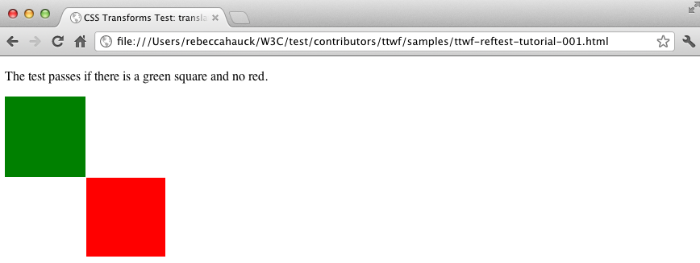

Test the Web Forward
Better tests for a better web
About me
"If I had taken a proprietary
control of the Web, then it would
never have taken off. People only
committed their time to it because
they knew it was open, shared:
that they could help decide what
would happen to it next..."
—Tim Berners-Lee
The web is defined by the community
Standards are the root of communication
Standards bring people together
But what exactly is a standard?
- Defines how something should work
- Based on the consensus of the community
- It's theoretically possible to implement
- Can actually be implemented more than once
- Implementations pass a common test suite
How do standards
come to be?
Draft
- A work in progress
- Multiple (many) updates
- Prototyping & early implementation begins
- Advances on consensus
- Tests are needed for proof of concept and resolution on details
Candidate Recommendation
- More firm than a draft
- Working group believes the spec has everything it needs
- Implementations are needed to validate that belief
- Tests are needed for implementations to be interoperable from the start
Recommendation
- Final official version
- Reached when there are two or more implementations
- All implementations pass the same suite of tests
- Future implementations also prove conformance using common test suite
15000+ more tests needed
6000 tests needing review
How do we get there??

More people
More tests
Better Web!
A movement is born...
Test the Web Forward!
So what happens at these events?
Learning
Kris Krueger, HTML5 Test Facilitator
Robin Berjon, HTML5 Spec Editor
Elika Etemad, CSS Flexbox Spec Editor
Learn from the experts
- How to Read a W3C Spec
- Testing with testharness.js
- How to Write a W3C Reftest
- Filing the Best Bugs
- The CSS Testing Framework
- The current testing status of your favorite spec!

Reftest Overview
- Two files: Test file + Reference file
- Test file uses the feature you're testing
- Reference file is an exact visual match without using the feature you're testing
- Self-describing (works both manually and with automation)
- Cross-browser & cross-platform
Sample Test Case
Basic test for the transform property
described in the CSS3 Transforms spec
using the translate() function

Completed Reftest
Test Metadata
<html>
<head>
<title>CSS Transforms Test: transform property with translate function</title>
<link rel="author" title="Your Name" href="mailto:youremail@address.com">
<link rel="help" href="http://www.w3.org/TR/css3-transforms/#transform-property">
<link rel="help" href="http://www.w3.org/TR/css3-transforms/#two-d-transform-functions">
<link rel="match" href="reference/css-transform-translate-ref.html">
<meta name="assert"
content="This transform moves the element by 100 pixels in both the X and Y directions.">
. . .
Test File
Add an element with the transform applied
<style type="text/css">
.greenSquare {
position: absolute;
background: green;
top: 0;
left: 0;
width: 100px;
height: 100px;
transform: translate(100px, 100px);
}
. . .
</style>
Reference File
Add an element that renders identically
<style type="text/css">
.greenSquare {
position: absolute;
background: green;
top: 100px;
left: 100px;
width: 100px;
height: 100px;
}
. . .
</style>
Test File
Add element only visible when the test fails
<style type="text/css">
. . .
.redSquare {
position: absolute;
background: red;
top: 100px;
left: 100px;
width: 100px;
height: 100px;
}
</style>
Test & Reference File
Simple statement of how the page renders when the test passes
<body>
<p>The test passes if there is a green square and no red.</p>
. . .
</body>
Test File
Add the red & green elements
<body>
<p>The test passes if there is a green square and no red.</p>
<div class="redSquare"></div>
<div class="greenSquare"></div>
</body>
Reference File
Add the green element
<body>
<p>The test passes if there is a green square and no red.</p>
<div class="greenSquare"></div>
</body>
Passing test
Failing test
Hacking
Specs
- HTML5
- CSS Transforms
- CSS Backgrounds & Borders
- CSS Values & Units
- Pointer Events
- IndexedDB
- CSSOM
- Dom Events
- WebRTC
Contributing
- Over 2000 new tests written
- Interoperability bugs found at each event
- Several spec bugs also found
- Converting existing test suites
- Side hacking on test infrastructure
- Tutorials & documentation
Building
Community
Building a
Better Web!

Join Movement!
- Come to an event
- Become a Sponsor
- Host your own
- Write tests!
Visit
http://testthewebforward.orgSubscribe
public-testtwf@w3.orgFollow
@testthewebforward#testtwf
Me
@rebeccahauckColophon
- reveal.js
by Hakim El Hattab - Fonts
ChunkFive
Adelle
Source Sans Pro - Images
Community:
http://pitchfork.com/festivals/chicago/2012
Sir Edmund Hlliary: brewbooks
http://www.flickr.com/photos/brewbooks/318391886
Standard: chmeredith
http://www.flickr.com/photos/chmeredith/4560746937
Club party: Ellen Ordóñez
http://commons.wikimedia.org/wiki/File:
Colombian_Party_Cartel._Photo_by_Ellen_Ordóñez_for_Colombian_Party_Cartel.jpg
Binary code:
http://commons.wikimedia.org/wiki/File:Binary_Code.jpg
Jump for joy:
http://www.psxextreme.com/ps3-wallpapers/910.html